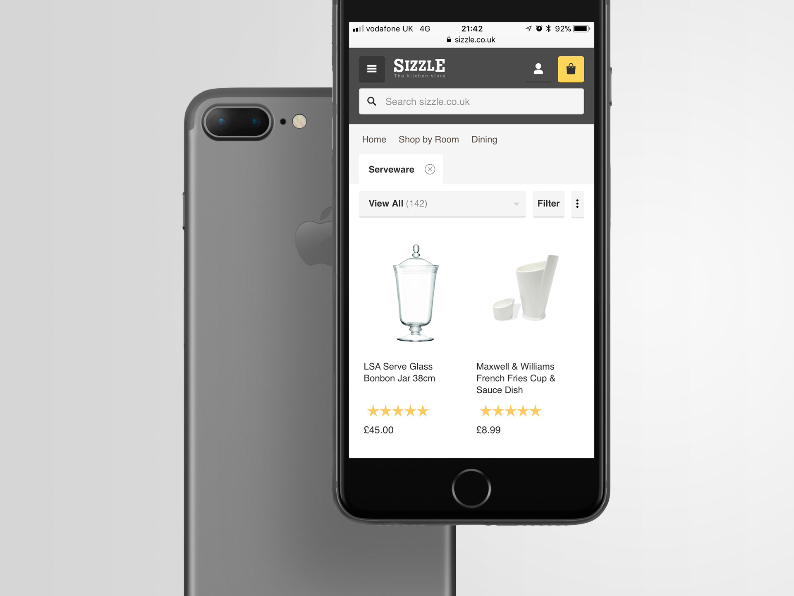
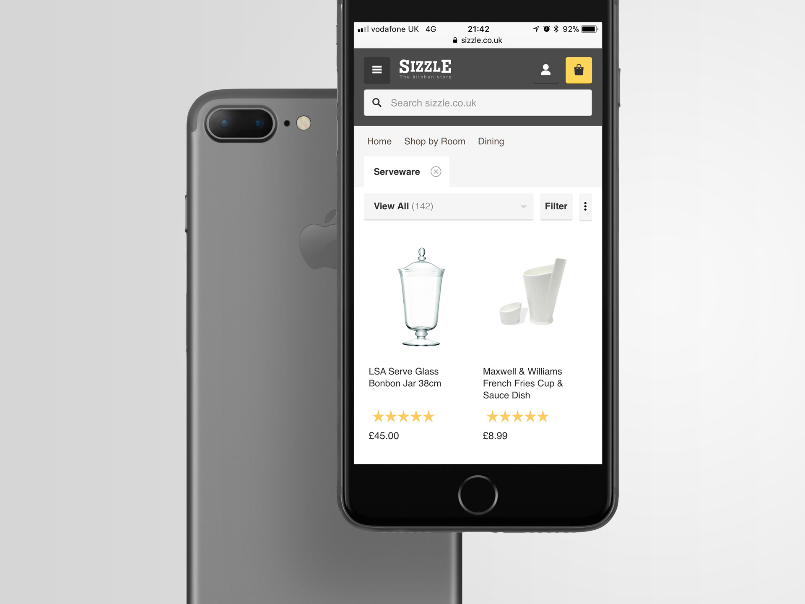

My story
We just released the newly branded ocado.com when they offered me the opportunity to start-up and lead the UX of the new general merchandise operation. After two intense years in the Ocado grocery's department, I moved to something new and exciting. As a matter of fact, and considering the number of players, I jumped into a real start-up experience.
Being actively hands-on, I didn't need many resources. My team was intentionally small but truly capable, agile, and creative.
We started with facing a white canvas. Eight months later, after extensive research and proofs-of-concept, we launched the first version of Fetch.co.uk. It was some sort of minimum viable product, powerful enough to kick-off the operation.
Soon after, though, we learned that it wasn't scalable enough to meet the mobile and tablet users' expectations. Resources and timing made us move towards the idea of making the platform responsive instead of developing native apps.
Six to eight months later, after working side by side with the development teams, we released our mobile-first and responsive platform proudly. In this rework, we significantly improved our design by defining a design language and arranging the UI elements in a way to imply importance in a hierarchical structure; we created a visual style to guide the users and enhance their experience.
Fetch and Sizzle were now not only mobile-friendly and more accessible for users, but also more scalable for future features implementations.
In 2016, Fetch was one the top e-commerce destinations for pet owners in the UK.